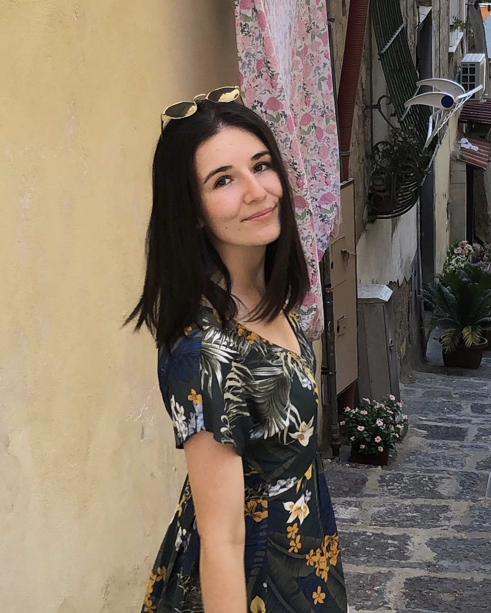
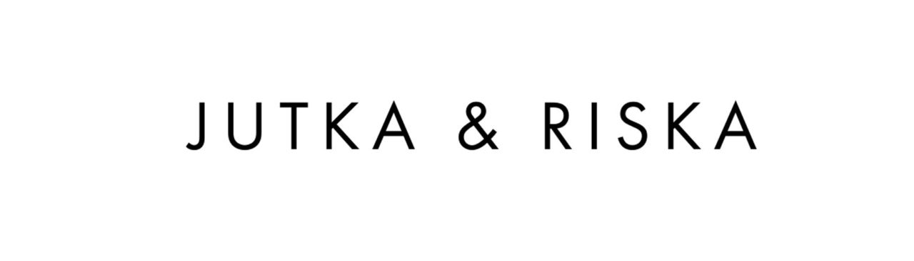
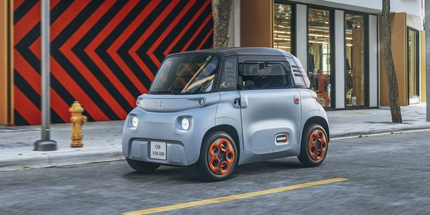
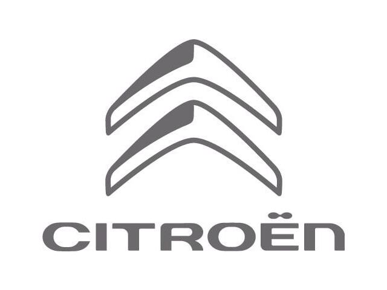
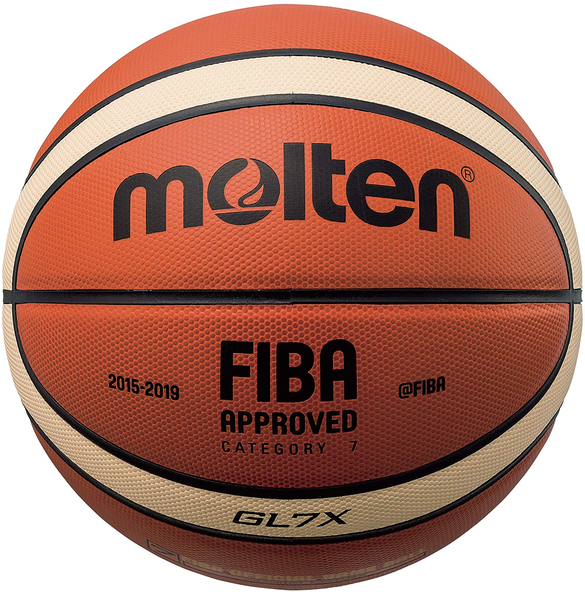
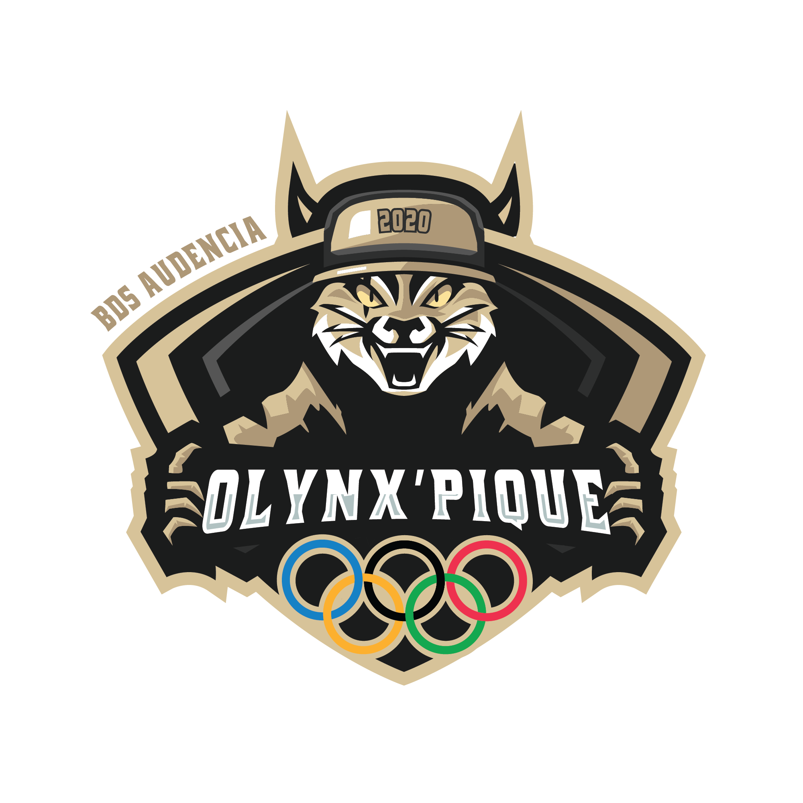
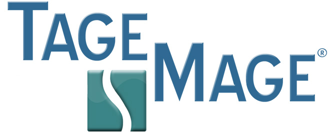

WELCOME, MOI C'EST LAURE 👋🏻
QUI SUIS-JE?
🇫🇷
Une jeune Nantaise de 20 ans
👩🏻🎓
Étudiante en 3ème année, spécialisation "Management Commercial", au Bachelor d'Audencia Business School
💼
Commerciale automobile véhicules neufs Citroën
‼️
Mes centres d'intérêts : sportive, cela fait 16 ans que je pratique le basketball, musicienne je joue de la guitare depuis plusieurs années, et grande voyageuse, j'ai à coeur de découvrir de nouveaux horizons!
MON PARCOURS A AUDENCIA BACHELOR
PREMIÈRE ANNEE ET SECONDE ANNÉE
Les deux premières années m'ont fait découvrir le commerce à travers l'ensemble des disciplines qui le constitue : Droit des Affaires, Marketing, Communication, Micro-économie, Commerce International, Management, Comptabilité, Techniques de vente, Géopolitique...
DES EXPÉRIENCES À L'ÉTRANGER
Les enseignemets cités plus hauts ont été rythmés par deux expériences à l'étranger.

En 1ère année, je suis partie 2 mois à Amsterdam, aux Pays-Bas, en tant que vendeuse dans une enseigne de prêt-à-porter hollandaise "Jutka & Riska".
En 2ème année, je me suis rendue à Barcelone, en Espagne, dans une entreprise d'organisation de mariage nommée "Luxury Weddings Barcelona", j'y occupais le poste d'assistante wedding planner.
TROISIÈME ANNÉE
La formation des commerciaux à Audencia
Pour ma dernière année à Audencia Bachelor, j'ai décidé de m'orienter dans la filière "Management Commercial" et ce en alternance. Les enseignements de cette année sont déstinés à affiner notre profil commercial grâce à trois pilliers fondamentaux : Négociation, Stratégie et Commercial 3.0.
La vente dans le monde automobile
Je suis actuellement commerciale automobile véhicules neufs au sein de la concession Citroën de Saint-Herblain. En plus de la vente en BtoC des véhicule neufs Citroën, je suis responsable de l'AMI, voiture sans permis 100% électrique de la marque.

2020 : L'ANNÉE DE TOUT LES CHALLENGES
Entre alternance, cours, pratique sportive, vie associative et concours pour les Grandes Écoles, 2020 est l'année de tout les défis!
- 
-

- 
- 
- 